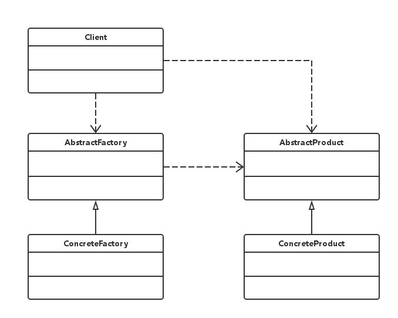

设计模式速谈：三、工厂模式
在上一篇文章中，我们首先介绍了“创建型”设计模式中的其中一种 — “简单工厂模式”，而“简单工厂模式”又具体分为两类，一类是只带有“一个产品对象”的最简模式，另一类是带有“一个抽象产品对象”的模式。而今天我们要介绍的是一种更加抽象的“创建型”设计模式 — “工厂模式”。
可以说，“工厂模式”是基于“简单工厂模式”抽象出来的一种更加抽象化的设计模式，它把所有“类实例化”（包括“工厂”和“产品”）的过程全部放到了子类当中去实现，而父类则负责定义创建对象的公共接口。“工厂模式”的一部分结构仍与“简单工厂模式”类似，只是相对于“简单工厂模式”而言，“工厂模式”没有了固定的核心工厂类，所有的“工厂”也需要由客户实现并实例化之后才能使用。
“工厂类”作为核心类在“工厂模式”中变成了一个抽象的“工厂”角色，这样处于父类的“核心工厂类”便仅仅负责实现具体工厂子类必须实现的接口，而这样进一步进行抽象的好处便是该模式可以在不修改具体工厂角色的情况下“引进”新的“产品”。下面给出了工厂模式的 UML 类图。

可以看得出来，相较于之前的“简单工厂模式”，在“工厂模式”中我们又增加一个抽象的“工厂类”，在该类中负责定义一些子类“工厂”所必须实现的通用接口。可以结合下面给出的示例代码来加以理解。
父类抽象角色：
AbstractFactory.java
AbstractProduct.java
// AbstractFactory.java；
public abstract class AbstractFactory {
// 通用的抽象工厂父类，负责定义一些子类工厂需要的接口；
public abstract AbstractProduct createProduct(Class<!--? extends AbstractProduct--> product);
}
// AbstractProduct.java；
public interface AbstractProduct {
// 抽象产品类，封装了产品本身的属性以及方法；
public double getPrice();
public void setPrice(double price);
}
子类抽象角色：
ConcreteFactoryA.java
ConcreteFactoryB.java
ConcreteProductA.java
ConcreteProductB.java
// ConcreteFactoryA.java；
public class ConcreteFactoryA extends AbstractFactory {
// 工厂子类，继承自父类工厂；
@Override
public AbstractProduct createProduct(Class<!--? extends AbstractProduct--> product) {
AbstractProduct p = null;
try {
p = (AbstractProduct) Class.forName(product.getName()).newInstance();
} catch (Exception e) {
e.printStackTrace();
}
return p;
}
}
// ConcreteFactoryB.java；
public class ConcreteFactoryB extends AbstractFactory {
// 工厂子类，继承自父类工厂；
@Override
public AbstractProduct createProduct(Class<!--? extends AbstractProduct--> product) {
AbstractProduct p = null;
try {
p = (AbstractProduct) Class.forName(product.getName()).newInstance();
// 加价；
p.setPrice(p.getPrice() * 1.5);
} catch (Exception e) {
e.printStackTrace();
}
return p;
}
}
// ConcreteProductA.java；
public class ConcreteProductA implements AbstractProduct {
// 子类产品，继承自父类产品；
private double price = 10.1;
public double getPrice() {
return this.price;
}
public void setPrice(double price) {
this.price = price;
}
}
// ConcreteProductB.java；
public class ConcreteProductB implements AbstractProduct {
// 子类产品，继承自父类产品；
private double price = 9.9;
public double getPrice() {
return this.price;
}
public void setPrice(double price) {
this.price = price;
}
}
客户角色（实体化工厂并生产产品）：
Client.java
// Client.java；
public class Client {
// 客户角色；
public static void main(String[] args) {
AbstractFactory factoryA = new ConcreteFactoryA();
AbstractFactory factoryB = new ConcreteFactoryB();
AbstractProduct productAFormFactoryA = factoryA.createProduct(ConcreteProductA.class);
AbstractProduct productAFormFactoryB = factoryB.createProduct(ConcreteProductA.class);
AbstractProduct productBFormFactoryB = factoryB.createProduct(ConcreteProductB.class);
System.out.println(productAFormFactoryA.getPrice());
System.out.println(productAFormFactoryB.getPrice());
System.out.println(productBFormFactoryB.getPrice());
}
}